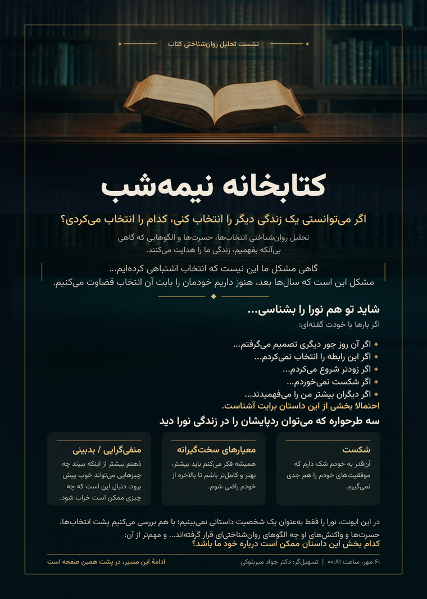
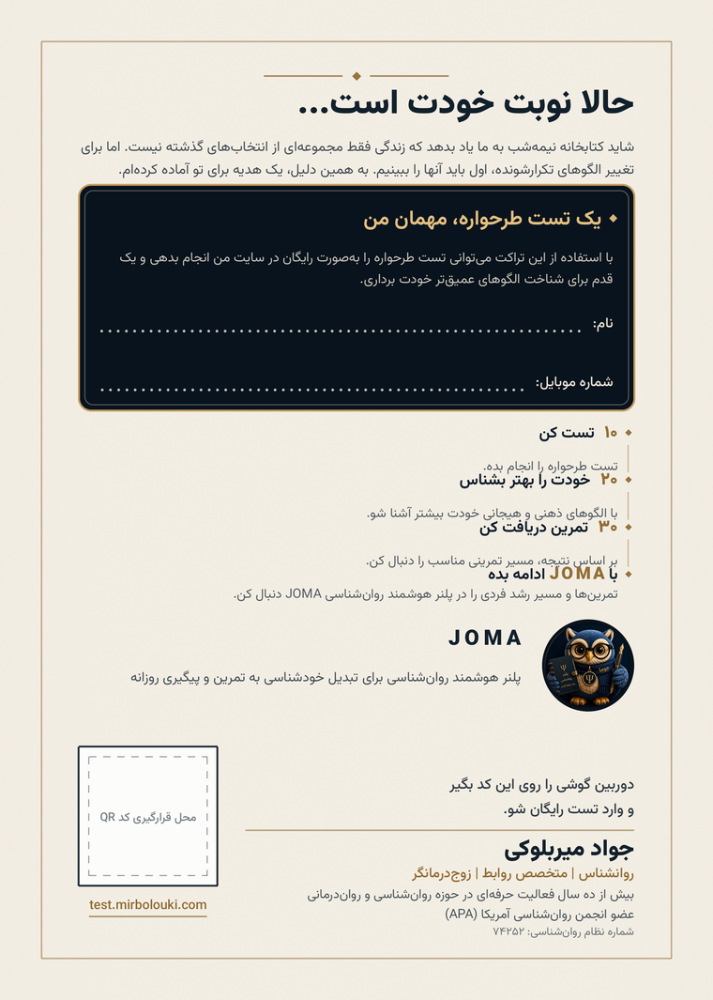
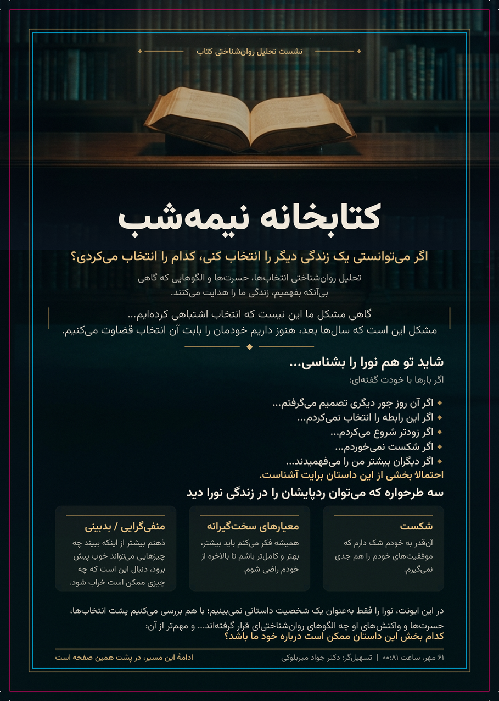
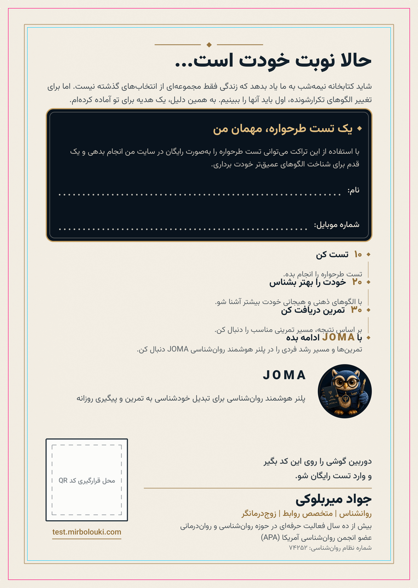

۱) برگهٔ تأیید — هر دو رو در یک نگاه
روی A = شبِ سینمایی کتابخانه (داستان و طرحوارهها). روی B = کاغذِ روشن (هدیهٔ تست، مسیر، JOMA، اعتماد). برای بزرگنمایی، روی تصویر کلیک راست و Open image in new tab کنید.

۲) هر رو بهصورت مجزا (تمامصفحه)


۳) بزرگنمایی ۱۰۰٪ (کیفیت واقعی چاپ 300DPI)
این برشها با رزولوشن واقعی چاپ هستند؛ داخل کادر اسکرول کنید تا لبهٔ حروف، نقطهچینهای نوشتنی و کارتها را از نزدیک ببینید.


۴) پروف کنترل چاپ (خط صورتی = خط برش، فیروزهای = ناحیهٔ امن)


۵) چکلیست تأیید شما
- حس «یادگاری یک جلسهٔ عمیق» — تأیید شد ✔ (پاسخ شما)
- خوانایی متنها در ابعاد چاپی → بخش ۳ را ببینید
- کارتهای سهگانهٔ طرحواره → بزرگنمایی اول
- باکس هدیه و فیلدهای نوشتنی → بزرگنمایی دوم
- حضور ظریف جغد JOMA → بزرگنمایی سوم
فایلهای چاپ نهایی در مخزن: flyer/out/press/midnight_library_A5_flyer_press_PDFX3.pdf (همراه imposition و مختصات جایگذاری QR). هیچ عبارتی با ادبیات تبلیغاتی در طرح نیست؛ دعوت تست بهصورت «هدیه» بیان شده است.